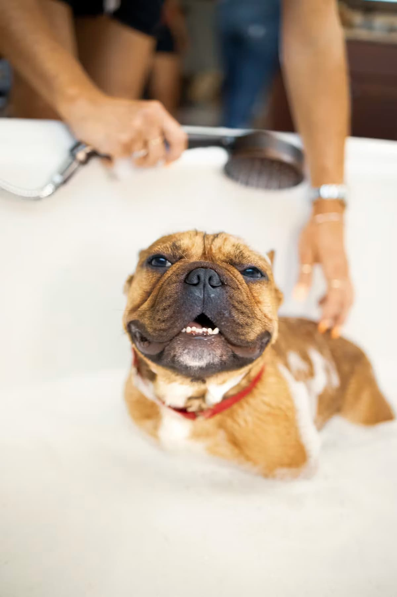
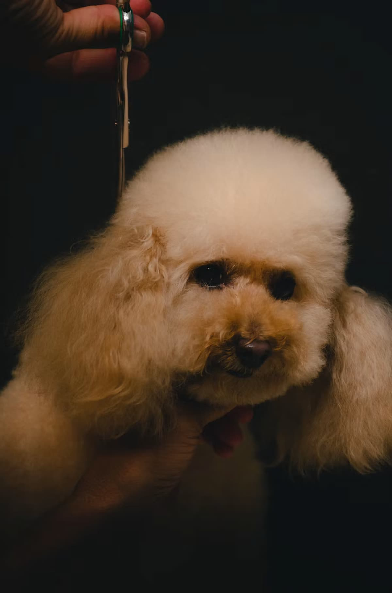
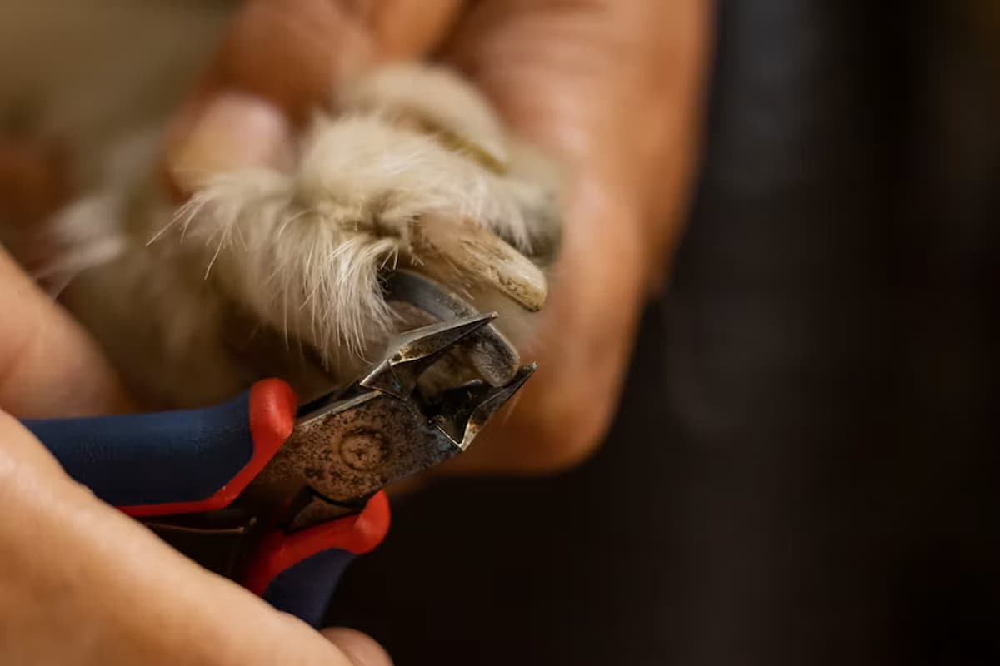

Our Services

Bathing and Shampooing
Our bathing and shampooing service ensures your dog is thoroughly cleaned and smells fresh. We use gentle, pet safe shampoos and conditioners to keep your dog's coat healthy and itch free between full grooms.
Haircut and Styling
Breed specific haircuts and custom styling of your choice (optional: groomers can provide recommendations). Includes a bath, trim, ear cleaning, and a bandana to finish the look.
Nail Clipping and Grinding
A gentle nail trim and filing - overgrown nails are trimmed back safely plus paw pad moisturizing.Our Customer Reviews
Jane Doe
Owner of Biscuit the Daschund
Biscuit is usually horrified by groomers, but he absolutely loves the staff at The Groomed Co.!
The services are always top notch and Biscuit always leaves fluffy, calm, and smelling amazing!
Ethan Smith
Dad of Max the Golden Retriever
Max is a very active Golden Retriever, but the staff at The Groomed Co. manage to handle
his coat even when it is a matted mess. He always leaves looking like a different dog! Shout out to the amazing team at The Groomed Co.!
Sam Burns
Owner of Luna the Corgi
Luna always enjoys getting groomed at The Groomed Co.! I seriously cannot say more about how amazing the staff and services are.
The staff always spoil Luna with treats and give her lots of love. Appointments book fast so
reserve your spot early!